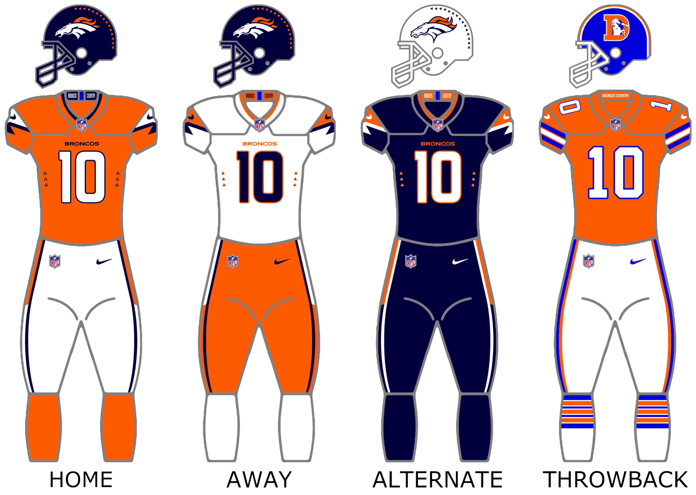

The Broncos future is bright when they have people like Bo Nix leading the way. The oldest people on the Broncos are only 33 years old, Garrett Boles, and Micheal Burton. The next oldest people is the age 31 years old with, Will Lutz, Alex Singleton, and Evan Engram.Then at 30 years there is, Mike McGlinchey, and D.J. Jones. Everyone Else is under 30 years old. The broncos offence has proven to be good against the Eagles, Titans, and Bengals. The Broncos defence has been great all year against every team we have played.
info from Here

Author: darealconman from: Wikimedia Commons